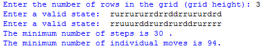

Abstract.
We study the motion of a robotic arm inside a rectangular tunnel. We prove that the configuration space of all possible positions of the robot is a CAT(0) cubical complex. This allows us to use techniques from geometric group theory to find the optimal way of moving the arm from one position to another. We also compute the diameter of the configuration space, that is, the longest distance between two positions of the robot.
Software. This page contains the implementation of our algorithm to move a robotic arm in a rectangular tunnel optimally. To execute the file, you must first download Python 2.7. Be sure to install the packages numpy and matplotlib. Now edit the file with IDLE and go to run followed by run module. This is where the program will ask for the conditions of the robotic arm.
First the program will request a positive integer grid height, followed by the start state and end state of identical length arms which originate at the lower left corner of the grid. A state of the robotic arm is taken as a string consisting of 'r', 'u', or 'd' such that there are no consecutive 'u' and 'd' entries. If this condition fails for any entered state or an entered state exits the grid the program will print out what caused the error and ask for a new state. Otherwise the program will then compute and return the number of steps, the number of individual moves, the optimal sequence of states from the start to the end state, and the corresponding animation. To adjust the rate of the animation, go to line 706 in the file and change the number associated to 'interval'.
Sample input and output.
Here is a sample input and output for a snake of length 23 in a tunnel of width 3; this is one of the running examples from the paper "The configuration space of a robotic arm in a tunnel ".

The program also produces an animation of the robot moving optimally between these positions: